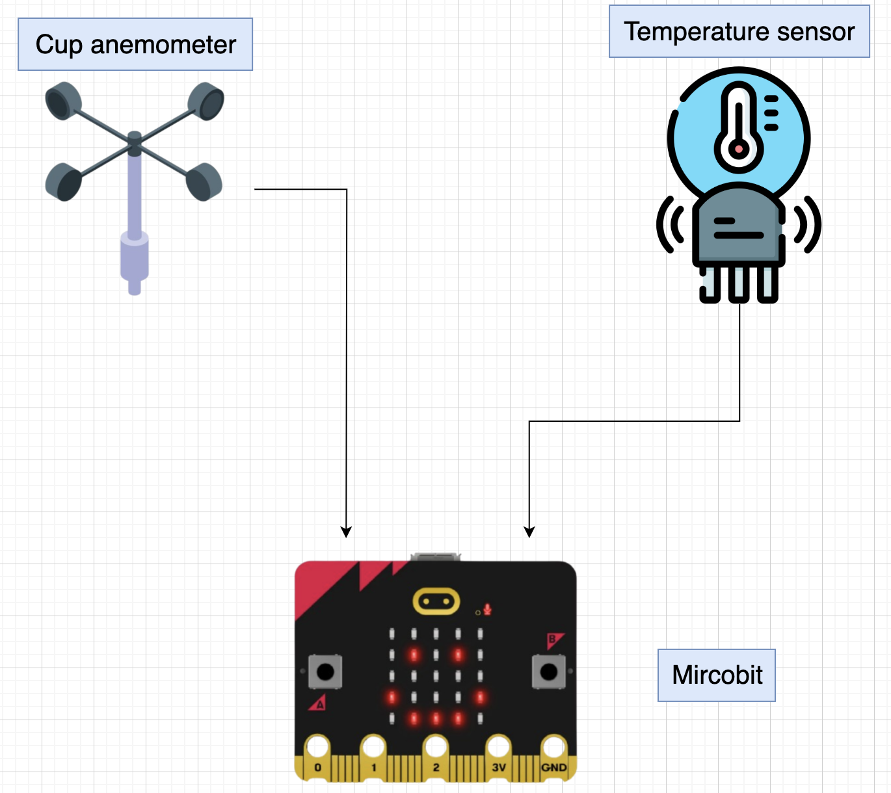
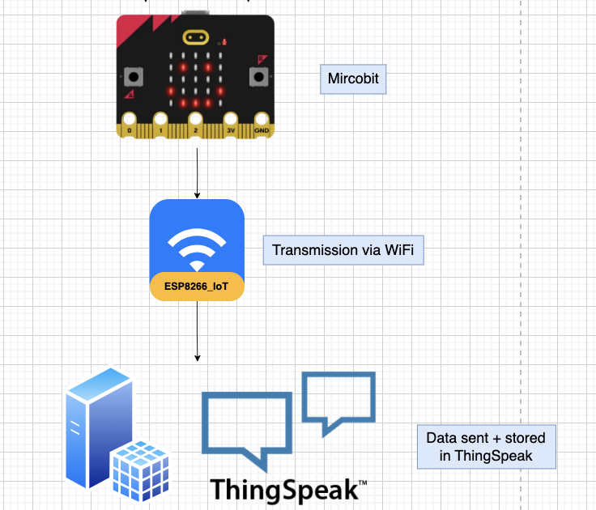
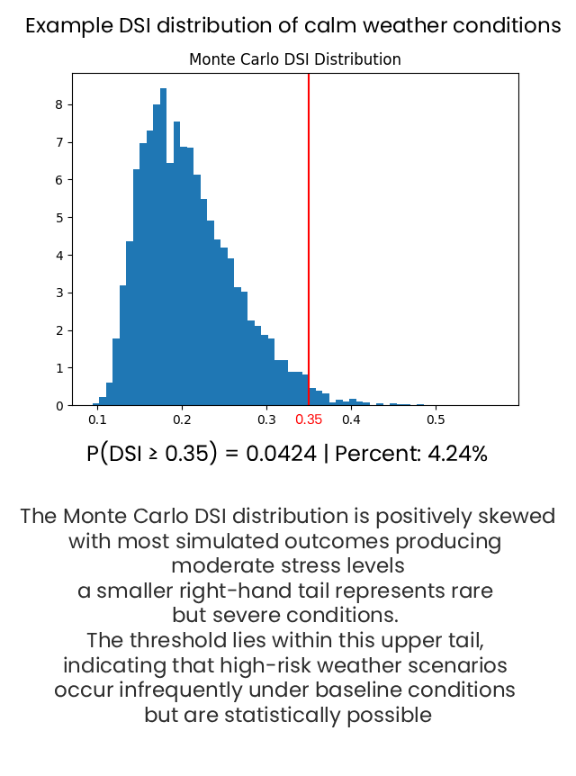
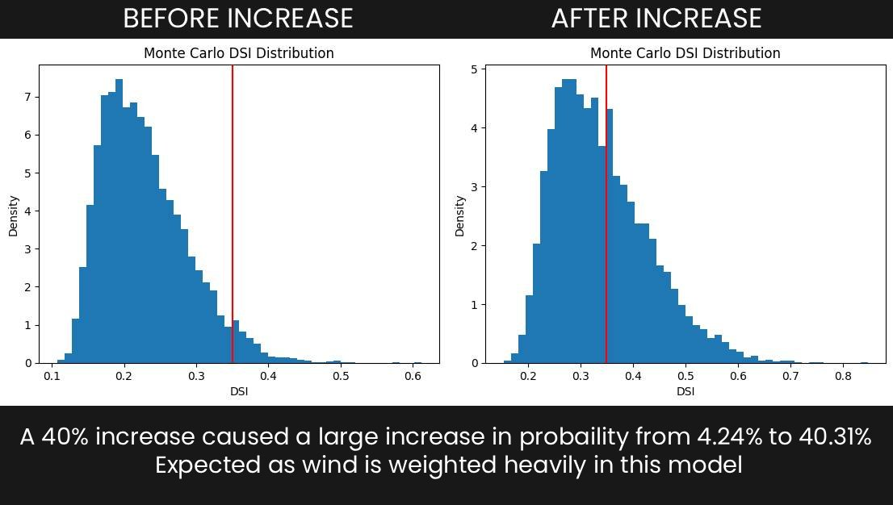
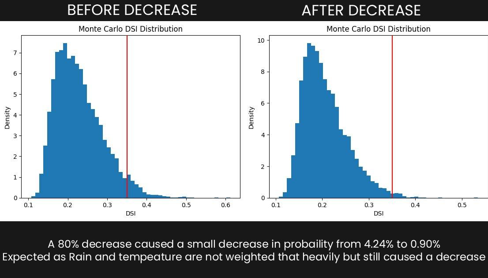
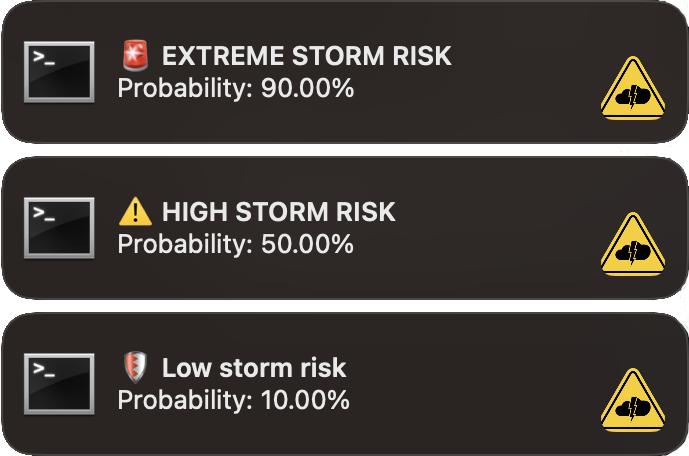

Meeting the brief
Basic requirement 1
- Two analogue inputs
- Cup anaometer - Windspeed
- Thermometer - Temperature
- Two digital inputs
- Button A - Start system
- Button B - Connect to WiFi + ThingSpeak
- Two primary digital outputs.
- LED screen
- OLED screen
- Once the user connects to WiFi and variables are initialised.
- The system runs automatically once started by the user and logs/measures all values without any futher user input.


System start:
Basic requirement 2

- Windspeed is collected by Cup anemometer
- Temperature is collected by thermometer

- The data is stored in ThingSpeak and exported as a CSV and used directly by the computer model
Basic requirement 3
- To simulate a real world process I used a fan and heater
- I simulated extreme heat conditions (Drought / low-humidity conditions) and relativley low/moderate wind conditions (Light Breeze (4-6 knots)
- System was tested under extreme heat (~60°C) - Logged data correctly
- Zero windspeed - Logged data correctly
- Wi-Fi disconnection - Logging stopped and prompted user to reconnect
Advanced requirement 1
- My computer model takes in multiple weather variables that relate to storms
- A Monte Carlo simulation generates many possible simulations to model risk.
- In each simulation a 7-day future path for each variable is generated using an
- Autoregressive predictive model
- System computes a Damage score index (DSI) for each simulation
- The probability of a damaging event is calculated as the fraction of simulated scenarios where the maximum DSI exceeds 0.35 ( as this was the DSI that damaging storms like Storm Éowyn exceeded )
- Forestry damage is then estimated from DSI score
- If the DSI doesnt reach a certain threshold, damage for that simulation is considered to be 0 ( trees have a tipping point )




Combining data with my embedded system:
- Embedded system readings are used to scale Monte Carlo simulations, combined with 30 days of open-source data from Athenry weather station to reflect real conditions.
Advanced requirement 2
- What if Max Gust (kt) and Mean Wind Speed (kt) increased by 40% ?
- What if Max Temp (C) and Rain (mm) decreased by 80% ?
- The system allows the user to edit:
- Percentage % increase ↑ / decrease ↓
- Number of days into the future
- Number of simulation worlds



Advanced requirement 3

- My model classifies risk into multiple levels
- Low Storm Risk (P < 25%): A low-priority notification is sent with a calm sound.
- High Storm Risk (25% ≤ P < 60%): A warning notification is sent with an alert sound.
- Extreme Storm Risk (P ≥ 60%): A critical notification fires with an urgent alarm sound.
- The system responds automatically as conditions change